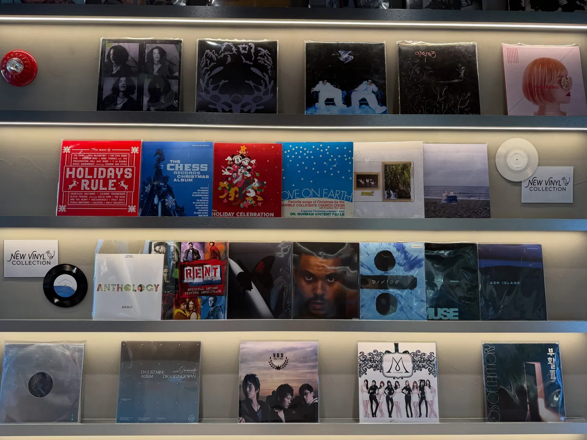
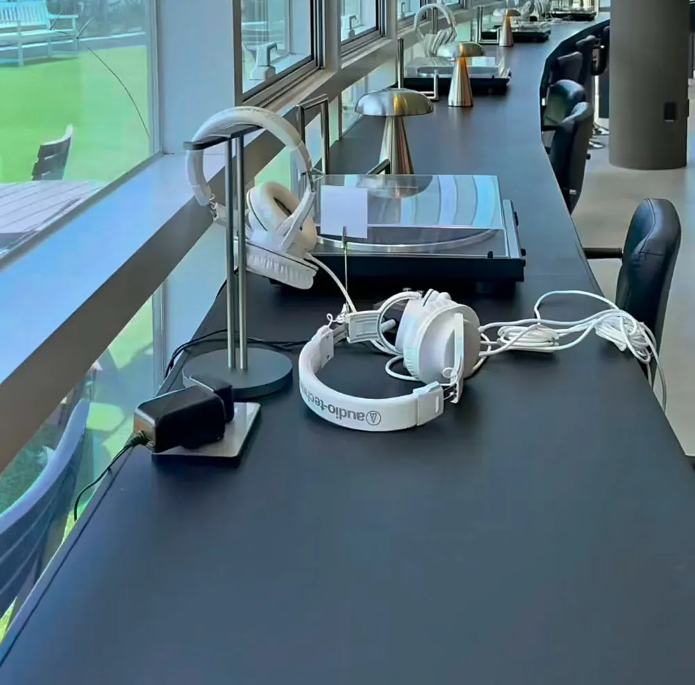
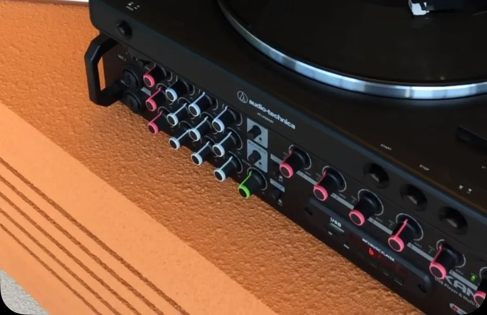
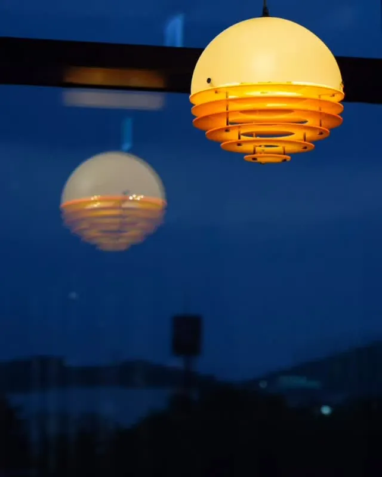
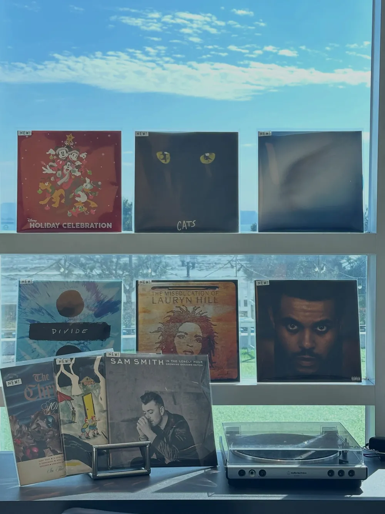

Tracklist
Five things to play
사운즈오브선셋에서 즐기는 다섯 가지
01
LP Listening Zone유료 LP 청음존
직접 바이닐을 고르고 턴테이블에 바늘을 올리는 시간. 고음질 사운드로 오직 음악에만 집중할 수 있습니다.
ALL DAY 10,000원02
Golden Hour골든아워
통창으로 노을빛이 깊게 들어오는 시간. 창가 자리에서 역광 실루엣 사진을 남기기 좋아요.
4–6 PM03
Sand Cookie수제 샌드쿠키
한국 전통 식재료의 깊은 맛을 현대적인 디저트로 풀어낸 시그니처.
Signature04
Coffee & Tea스페셜티 커피 · 티
스페셜티 커피와 다채로운 티 라인업으로 음악의 여운을 느껴보세요.
Specialty05
Tableware레코드 테이블웨어
레코드판과 음악을 모티브로 직접 디자인한 테이블웨어. 위에서 내려다보는 플랫레이 컷이 시그니처예요.
Flat-lay
Liner notes · How to listen
Drop the needle.
처음 오시는 분들도 부담 없이 즐기실 수 있습니다.
- 카운터에서 결제음료와 청음존 이용권을 함께 결제하면 전용 좌석으로 안내해 드려요.
- 직원 안내음반 교체 방법까지 알려 드리고, 좌석마다 이용 가이드가 있어요.
- 마음에 드는 LP 골라 듣기매장 큐레이션 LP가 충분해서 빈손으로 오셔도 돼요.
LP LISTENING · ALL DAY10,000원주말 · 공휴일은 2시간 이용 제한
청음존을 이용하지 않아도 카페는 자유롭게 이용할 수 있어요.


Side A
Unjeong
스타필드빌리지 운정점
쇼핑 중 한 계단 올라선 2층. 낮에는 산책로를 내려다보고, 해 질 녘에는 통창으로 노을빛이 스며들어요.
- 주소
- 경기 파주시 와석순환로515번길 10 C동 2층 3201호스타필드빌리지 운정점 C동 2층 · 애슐리 맞은편, 운정빌리지약국 옆
- 교통
- 경의중앙선 운정역 1번 출구에서 약 500m
- 주차
- 스타필드빌리지 C동에 주차 후 2층으로주차 4시간 무료
- 영업
- 매일 10:00 – 22:00라스트오더 21:30

Side B
Yeongjong
영종도점
2층의 탁 트인 창으로 영종도의 하늘을 마주하는 곳. 해 질 녘이면 공간 전체가 붉고 따뜻하게 물들어요.
- 주소
- 인천 영종구 하늘달빛로2번길 8 2층엘리베이터 또는 계단으로 2층
- 교통
- 구읍뱃터에서 자차 5분을왕리 · 왕산해수욕장에서 자차 15분
- 주차
- 씨사이드파크 어린이물놀이장 주차장 (무료)주차장이 여러 곳이라 꼭 어린이물놀이장 주차장으로 오세요. 공원 안으로 들어오면 바로 보여요.
- 영업
- 월 – 목 10:00 – 18:30 · 라스트오더 18:00금 – 일 10:00 – 다음 날 02:00 · 라스트오더 01:30
- 반려동물
- 외부 테라스에서 함께할 수 있어요실내 이용은 어려워요
MIDNIGHT · FRI – SUN
21:00 – 02:00
금 · 토 · 일은 새벽 2시까지, 밤에도 LP를 들을 수 있어요. 라스트오더 01:30.

Good to know
Bonus track
누구나, 넉넉하게
개인부터 커플, 가족, 단체까지 모두 머물 수 있는 대형 카페입니다.
케어키즈존 운영
두 지점 모두 케어키즈존으로 운영 중입니다.
대관 · 협업 문의
광고, 대관, 콜라보 문의는 인스타그램 DM으로 남겨 주세요.